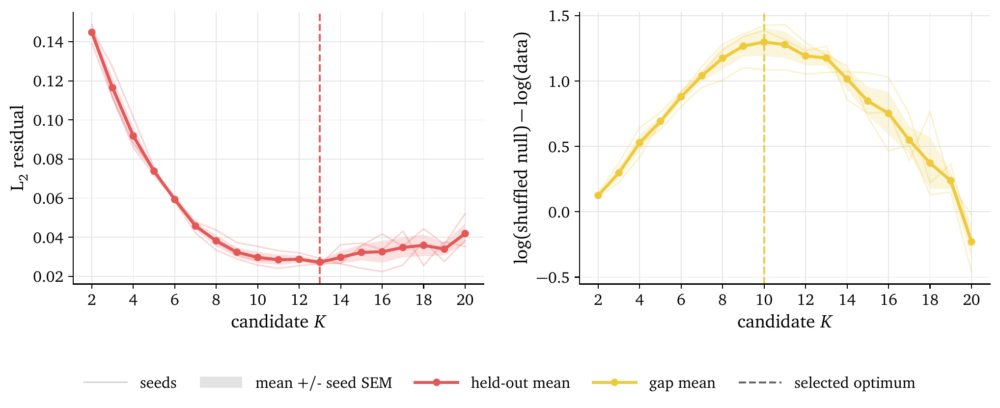
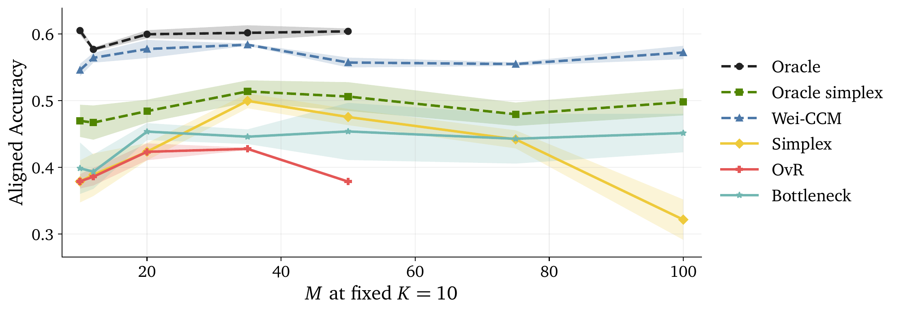
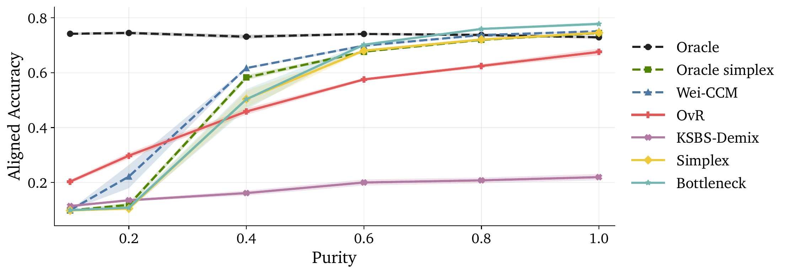
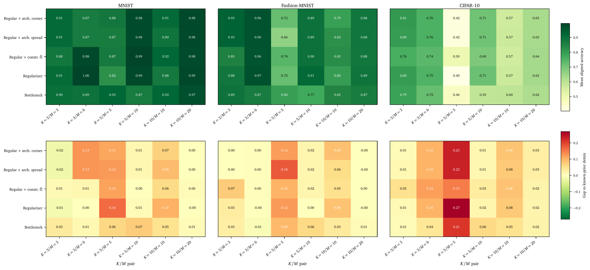

Multiclass Classification without Labels
via Posterior Simplex Geometry
Raphaël Bonnet-Guerrini1,In collaboration with: Johann Ioannou-Nikolaides2, Troels Petersen2, and Vincenzo Piuri1
1Computer Science Department, University of Milan;
2Niels Bohr Institute, University of Copenhagen
CWoLa: Classification Without Labels
Binary theorem: given two mixtures \(M_1\), \(M_2\) of pure samples \(S\) and \(B\) with signal fractions \(f_1 > f_2\), the optimal classifier separating \(M_1\) from \(M_2\) is also optimal for separating \(S\) from \(B\).
\[ L_{M_1/M_2}=\frac{f_1p_S+(1-f_1)p_B}{f_2p_S+(1-f_2)p_B}=\frac{f_1L_{S/B}+(1-f_1)}{f_2L_{S/B}+(1-f_2)} \]
If \(f_1 > f_2\), \(L_{S/B}\) and \(L_{M_1/M_2}\) define the same classifier — no labels, no proportions.
A well-established method in particle physics

Anomaly detection
model-agnostic resonance / new-physics searches
Classification from impure samples
quark/gluon and jet tagging
360+ citations, including 270 in HEP Always the binary case: signal vs background. The guarantee does not extend to \(K>2\).
Why binary CWoLa breaks for \(K>2\)
- Binary CWoLa gives only a one-dimensional ordering — not a \(K\)-class representation.
- One-vs-rest works, but needs \(M-1\) separate classifiers — expensive and unstable.
Our move: train one \(M\)-way classifier to predict mixture identity, and read the latent classes off its posterior geometry.
The setup: \(K\) classes, \(M\) mixtures
Each mixture \(m\) has density built from shared class-conditionals \(p_k\) and unknown weights \(\pi_{mk}\):
We observe only the data \(x\) and the mixture id \(m\) — never the latent label \(y\), never the mixing matrix \(\Pi\).
The simplex intuition
Trained only on mixture id, the posterior cloud organizes on a \((K-1)\)-simplex inside \(\Delta^{M-1}\) — its vertices are the latent classes.

Two prior-free recoveries
(R1) Post-hoc simplex fitting
- Train the \(M\)-way classifier.
- Vertex-hunt the posterior cloud \(\to \hat V\).
- Decode each point by barycentric coordinates.
(R2) Architectural bottleneck
- Factor \(g_\theta(x)=\hat\Pi\,\alpha_\theta(x)\).
- Simplex enforced during training.
- Strong inductive bias for weak trunks.
Assumptions: shared class-conditionals, full-rank \(\Pi\) (\(M\ge K\)), separability (anchors), uniform mixture sampling. Both also recover the hidden mixing matrix \(\Pi\).
The geometry is really there

CIFAR-10, \(K=3\), \(M=6\): trained only on mixture id, yet points cluster at vertices that match the oracle classes — via post-hoc fit (a) or bottleneck (b).
More mixtures → better recovery

CIFAR-10. At fixed \(K=10\), extra mixtures add redundant constraints: simplex rises \(0.55\,(M{=}10)\to{\sim}0.65\,(M{=}30,50)\), nearly matching the known-prior oracle.
Real data: Galaxy10 DECaLS

Real telescope images, \(K=M=10\). As mixture purity drops the problem becomes unidentifiable — but our methods degrade gracefully and track the oracle-prior baselines at moderate/high purity.
Strongest prior-free method
| Technique | Method | Accuracy ↑ | ECE ↓ |
|---|---|---|---|
| Supervised | Oracle | 0.802 | 0.032 |
| Prior-aware | Wei CCM | 0.686 | 0.069 |
| Oracle Simplex | 0.661 | 0.116 | |
| Prior-free | OvR | 0.476 | 0.272 |
| Bottleneck | 0.503 | 0.197 | |
| Simplex | 0.584 | 0.123 |
Galaxy10, \(K=10,M=20\). Simplex beats OvR by +10.8 accuracy points and halves calibration error — closing most of the gap to oracle-prior methods.
You don't even need to know \(K\)

\(K\) enters only the post-hoc fitter, so it is discoverable: a held-out reconstruction error plus a gap statistic recover \(K_{\text{true}}=10\) on Galaxy10.
Conclusion
Mixture identity alone recovers multiclass structure — no labels, no priors.
- The mixture posterior is a \((K-1)\)-simplex; its vertices give both the classes and the hidden mixing matrix.
- Purity and anchors still matter — recovery degrades gracefully, not silently.
- Model-agnostic → scalable to label-scarce science.
Thank you !
Backup Slides
Backup: Posterior Simplex Theorem
With class abundances \(c_k=\sum_m\pi_{mk}\) and vertices \(v_k=\Pi_{:,k}/c_k\):
\(V\) has full column rank, so the latent posterior is recovered by a linear inverse:
Anchor points \(x\in\mathcal{X}_k\) map exactly to \(v_k\); the vertices are the extreme points of \(\operatorname{conv}\operatorname{supp}(g^\star_\#\mu_X)\), so \(\Pi\) is identifiable up to permutation.
Backup: Multiclass CWoLa algorithm
# INPUT: unlabeled mixtures D_1..D_M, target K <= M, mode in {R1, R2}
# OUTPUT: latent-class predictor a_hat, recovered mixing matrix Pi_hat
build supervised set {(x_i, m_i)} # m_i = mixture identity
if mode == R1: # post-hoc simplex fitting
train M-way classifier g_theta via cross-entropy
u_i = g_theta(x_i)
V_hat = vertex_hunt({u_i})
a_hat(x) = argmin_{a in simplex} || g_theta(x) - V_hat a ||^2
elif mode == R2: # architectural bottleneck
train g_theta(x) = Pi_hat * a_theta(x) end-to-end (bottleneck warm-up)
V_hat = columns of Pi_hat ; a_hat(x) = a_theta(x)
return a_hat, Pi_hat
Backup: scaling with \(M\) on Galaxy10

Backup: purity on CIFAR-10

Backup: per-dataset fitter comparison
